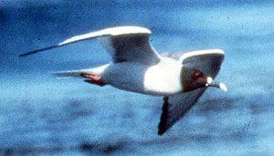
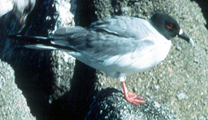
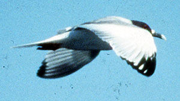

| These photographs accompany records that have been recently submitted to the committee. This record
has been ACCEPTED.  Swallow-tailed Gull Creagrus furcatus 7 June 1985, Hopkins Marine Station, MTY 1985-079 © 1985 Peter La Tourette  Swallow-tailed Gull Creagrus furcatus 7 June 1985, Hopkins Marine Station, MTY 1985-079 © 1985 Gary Neil  Swallow-tailed Gull Creagrus furcatus 7 June 1985, Hopkins Marine Station, MTY 1985-079 © 1985 Gary Neil Back to CBRC Rare Bird Photos |